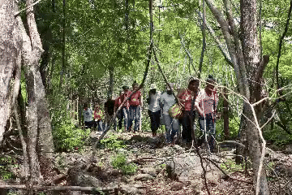
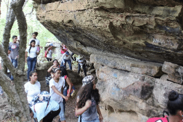

Temporada de Senderismo 2024 - 2025
Taguay - Aragua - Venezuela
Activate con el mejor Senderismo
"Tenemos rutas para el senderismo en Invierno y en Verano"
Senderismo Deportivo
Es una actividad deportiva No competitiva,
que consiste en caminar siguiendo un itinerario determinado
se acostumbra hacer por sendas, caminos rurales y vías verdes.


"Contamos con los mejores guías Turisticos"
Senderismo Familiar
El senderismo familiar son actividades
recreativa y deportiva al aire libre. Es una buena
opción para fortalecer los vinculos entre los
miembros de la familia y forjar valores
"Te ayudamos a diseñar la mejor ruta"
Senderismo Educativo
Los senderos educativos son "escenarios insustituibles"
para el desarrollo de la sensibilización ambiental en la
población en general, ideal para favorecer modelos de conductas
sostenibles.
"Senderismo, la mejor forma de conexión con el ambiente"
Senderismo Interpretativo
Son espacios en las cuales se llevan a cabo actividades
educativas que buscan la integración de la sociedad civil, grupos
humanos locales y visitantes a los procesos de conservación.

.gif)
.gif)
.gif)
.gif)